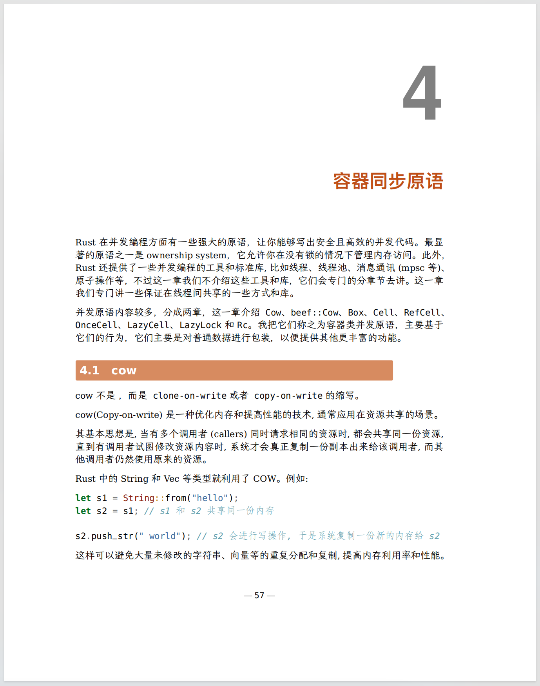

Rust 在并发编程方面有一些强大的原语，让你能够写出安全且高效的并发代码。最显著的原语之一是 ownership system，它允许你在没有锁的情况下管理内存访问。此外，Rust 还提供了一些并发编程的工具和标准库,比如线程、线程池、消息通讯(mpsc等)、原子操作等，不过这一章我们不介绍这些工具和库，它们会专门的分章节去讲。这一章我们专门讲一些保证在线程间共享的一些方式和库。
并发原语内容较多，分成两章，这一章介绍Cow、beef::Cow、Box、 Cell、RefCell、OnceCell、LazyCell、LazyLock 和 Rc。 我把它们称之为容器类并发原语，主要基于它们的行为，它们主要是对普通数据进行包装，以便提供其他更丰富的功能。

Cow
Cow不是🐄，而是clone-on-write或者copy-on-write的缩写。
Cow(Copy-on-write) 是一种优化内存和提高性能的技术,通常应用在资源共享的场景。
其基本思想是,当有多个调用者(callers)同时请求相同的资源时,都会共享同一份资源,直到有调用者试图修改资源内容时,系统才会真正复制一份副本出来给该调用者,而其他调用者仍然使用原来的资源。
Rust中的String和Vec等类型就利用了Cow。例如:
|
|
这样可以避免大量未修改的字符串、向量等的重复分配和复制,提高内存利用率和性能。
cow的优点是:
- 内存利用率高,只有进行写时才复制
- 读取性能高,多个调用者共享同一资源
缺点是:
- 写时需要复制,有一定性能损失
- 实现较复杂
需要根据实际场景权衡使用。但对于存在大量相同或相似资源的共享情况,使用cow可以带来显著性能提升。
标准库中std::borrow::Cow 类型是一个智能指针，提供了写时克隆（clone-on-write）的功能：它可以封装并提供对借用数据的不可变访问，当需要进行修改或获取所有权时，它可以惰性地克隆数据。
Cow 实现了Deref，这意味着你可以直接在其封装的数据上调用不可变方法。如果需要进行改变，则 to_mut 将获取到一个对拥有的值的可变引用，必要时进行克隆。
下面的代码将origin字符串包装成一个cow, 你可以把它borrowed成一个&str,其实也可以直接在cow调用&str方法，因为Cow实现了Deref，可以自动解引用，比如直接调用len和into：
|
|
接下来我们已一个写时clone的例子。下面这个例子将字符串中的字符全部改成大写字母：
|
|
这里使用to_mut得到一个可变引用，一旦s有修改，它会从原始数据中clone一份，在克隆的数据上进行修改。
所以如果你想在某些数据上实现copy-on-write/clone-on-write的功能，可以考虑使用std::borrow::Cow。
更进一步，beef库提供了一个更快，更紧凑的Cow类型,它的使用方法和标准库的Cow使用方法类似：
|
|
这个例子的上半部分演示了生成beef::Cow的三种方法Cow::borrowed、Cow::from、Cow::owned，标准库Cow也有这三个方法，它们的区别是：
borrowed: 借用已有资源from: 从已有资源复制创建Ownedowned: 自己提供资源内容
这个例子下半部分对比了标准库Cow和beef::Cow以及更紧凑的beef::lean::Cow所占内存的大小。可以看到对于数据是str类型的Cow，现在的标准库的Cow占三个WORD, 和beef::Cow相当,而进一步压缩的beef::lean::Cow只占了两个Word。
cow-utils针对字符串的Cow做了优化，性能更好。
Box
Box<T>，通常简称为box，提供了在 Rust 中最简单的堆分配形式。Box 为这个分配提供了所有权，并在超出作用域时释放其内容。Box 还确保它们不会分配超过 isize::MAX 字节的内存。
它的使用很简单，下面的例子就是把值val从栈上移动到堆上：
|
|
那么怎么反其道而行之呢？下面的例子就是通过解引用把值从堆上移动到栈上：
|
|
如果我们要定义一个递归的数据结构，比如链表，下面的方式是不行的，因为List的大小不固定，我们不知道该分配给它多少内存：
|
|
这个时候就可以使用Box了:
|
|
目前Rust还提供一个实验性的类型ThinBox, 它是一个瘦指针，不管内部元素的类型是啥：
|
|
Cell、RefCell、OnceCell、LazyCell 和 LazyLock
Cell和RefCell是Rust中用于内部可变性(interior mutability)的两个重要类型。
Cell和RefCell都是可共享的可变容器。可共享的可变容器的存在是为了以受控的方式允许可变性，即使存在别名引用。Cell
Cell
Cell<T>允许在不违反借用规则的前提下,修改其包含的值:
Cell中的值不再拥有所有权,只能通过get和set方法访问。set方法可以在不获取可变引用的情况下修改Cell的值。- 适用于简单的单值容器，如整数或字符。
下面这个例子创建了一个Cell, 赋值给变量x,注意x是不可变的，但是我们能够通过set方法修改它的值，并且即使存在对x的引用y时也可以修改它的值：
|
|
RefCell
RefCell<T> 提供了更灵活的内部可变性，允许在运行时检查借用规则,通过运行时借用检查来实现:
- 通过
borrow和borrow_mut方法进行不可变和可变借用。 - 借用必须在作用域结束前归还,否则会panic。
- 适用于包含多个字段的容器。
|
|
如果你开启了#![feature(cell_update)], 你还可以更新它:c.update(|x| x + 1);。
OnceCell
OnceCell 是 Rust 标准库中的一个类型，用于提供一次性写入的单元格。它允许在运行时将值放入单元格，但只允许一次。一旦值被写入，进一步的写入尝试将被忽略。
主要特点和用途：
- 一次性写入：
OnceCell确保其内部值只能被写入一次。一旦值被写入，后续的写入操作将被忽略。 - 懒初始化：
OnceCell支持懒初始化，这意味着它只有在需要时才会进行初始化。这在需要在运行时确定何时初始化值的情况下很有用。 - 线程安全：
OnceCell提供了线程安全的一次性写入。在多线程环境中，它确保只有一个线程能够成功写入值，而其他线程的写入尝试将被忽略。
下面这个例子演示了OnceCell使用方法，还未初始化的时候，获取的它的值是None, 一旦初始化为Hello, World!,它的值就固定下来了:
|
|
LazyCell、LazyLock
有时候我们想实现懒(惰性)初始化的效果，当然lazy_static库可以实现这个效果，但是Rust标准库也提供了一个功能，不过目前还处于不稳定的状态，你需要设置#![feature(lazy_cell)]使能它。
下面是一个使用它的例子:
|
|
注意它是懒初始化的，也就是你在第一次访问它的时候它才会调用初始化函数进行初始化。
但是它不是线程安全的，如果想使用线程安全的版本，你可以使用std::sync::LazyLock:
|
|
rc
Rc 是 Rust 标准库中的一个智能指针类型，全名是 std::rc::Rc，代表 "reference counting"。它用于在多个地方共享相同数据时，通过引用计数来进行所有权管理。
Rc使用引用计数来追踪指向数据的引用数量。当引用计数降为零时，数据会被自动释放。Rc允许多个 Rc 指针共享相同的数据，而无需担心所有权的转移。Rc内部存储的数据是不可变的。如果需要可变性，可以使用 RefCell 或 Mutex 等内部可变性的机制。Rc在处理循环引用时需要额外注意，因为循环引用会导致引用计数无法降为零，从而导致内存泄漏。为了解决这个问题，可以使用 Weak 类型。
下面这个例子演示了Rc的基本使用方法，通过clone我们可以获得新的共享引用。
|
|
注意Rc 允许在多个地方共享不可变数据，通过引用计数来管理所有权。
如果还想修改数据，那么就可以使用上一节的Cell相关类型, 比如下面的例子，我们使用Rc<RefCell<HashMap>>类型来实现这个需求：
|
|
这样我们就针对不可变类型Rc实现了数据的可变性。
注意Rc不是线程安全的，针对上面的里面，如果想实现线程安全的类型，你可以使用Arc,不过这个类型我们放在下一章进行再介绍。